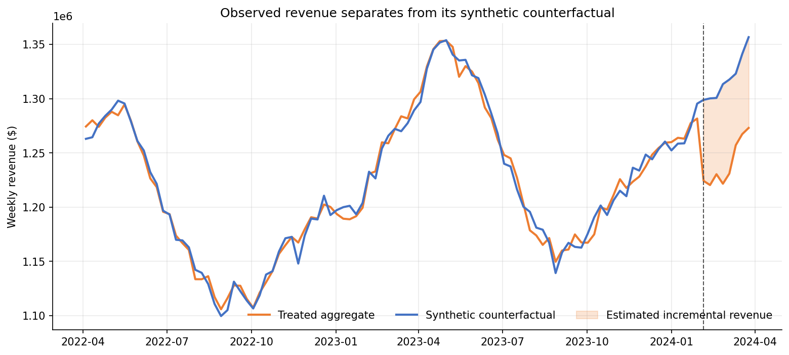

6.3 Inkrementalitätsexperimente
Über die deutsche Ausgabe
Diese Seite ist eine KI-Übersetzung der englischen Ausgabe von Marketing Science in Python. Die englische Ausgabe ist maßgeblich und hat bei Abweichungen Vorrang. Code, Notebooks und Text in Abbildungen bleiben auf Englisch. Englische Ausgabe lesen
Was ist Inkrementalität?
Der Optimierer des MMM will Google Search um 30% kürzen, bis ganz hinunter auf die Untergrenze seiner Nebenbedingung, und das Modell kann diesen Schritt nicht verteidigen: Das Intervall des marginalen ROAS von Search reicht von 0.4 bis 9.5, zu breit, um darauf zu handeln. Dort endete Abschnitt 6.2. Der Grund liegt in der Historie. Search läuft seit drei Jahren durchgehend mit einem nahezu konstanten Wochenbudget, das Modell hat seine Ausgaben also nie in Bewegung gesehen, und die Schätzung ist überwiegend der Prior, mit dem es gestartet ist. Einen Kanal auf Basis einer solchen Schätzung zu kürzen ist eine Wette, keine Entscheidung. Bevor wir landesweit kürzen, müssen wir wissen, was die letzten 30% der Search-Ausgaben tatsächlich erkauft haben.
Diese Zahl ist ein inkrementeller Effekt. Inkrementalität ist das Ergebnis, das ohne die Werbung nicht eingetreten wäre: Verzeichnet eine Kampagne $120,000 an Umsatz und wären $100,000 davon ohnehin gekommen, beträgt der inkrementelle Umsatz $20,000. Die Attribution hat zu den $100,000 nichts zu sagen, und das MMM kann sie nur aus der Variation in der Historie schätzen, von der Search keine hat. Um an die Zahl zu kommen, müssen wir die Daten verändern: ein Experiment durchführen, in dem wir kontrollieren, was sich ändert, und wo.
Die Experimentiereinheit wählen
Die erste Designentscheidung ist, was randomisiert wird. Eine nutzerbasierte Conversion-Lift-Studie randomisiert die infrage kommenden Personen: Die Plattform enthält einer Holdout-Gruppe die Kampagne vor und vergleicht die Conversion-Raten. Ein Geo-Experiment randomisiert Märkte: Die Media-Ausgaben ändern sich für alle in den Testmärkten, und das Ergebnis ist das, was das Unternehmen dort misst. Abbildung 1 zeigt beide nebeneinander.

| Designfrage | Nutzerbasierter Lift | Geo-Experiment |
|---|---|---|
| Randomisierungseinheit | Infrage kommender Nutzer | Markt oder Region |
| Üblicherweise durchgeführt von | Werbeplattform | Marke und Analyst |
| Primäres Ergebnis | Erfasste Conversions | Aggregierter Geschäfts-KPI |
| Hauptstärke | Individuelle Randomisierung | Offline- und Gesamtmarkt-Lift |
| Hauptbeschränkung | Identität, Tracking, Volumen | Wenige Einheiten, Spillover, Rauschen |
Nutzerbasierter Lift ist das sauberere Design, wenn es verfügbar ist: individuelle Randomisierung, große Stichproben und eine Konsole, die die Arbeit erledigt. Aber er misst erfasste Conversions unter Nutzern, die die Plattform identifizieren kann, sodass Offline-Verkäufe, der Halo-Effekt auf andere Kanäle und der Umsatz in den eigenen Büchern des Unternehmens außerhalb liegen. Unsere Frage betrifft den Gesamtumsatz in den Büchern des Unternehmens, und die Entscheidung ist eine Budgetkürzung und keine Kampagneneinstellung. Das weist auf die Geografie. Ein Geo-Experiment liest sein Ergebnis aus dem Umsatzsystem, und es aggregiert sich auf die Geo-Wochen-Struktur, die das MMM verwendet und die Abschnitt 6.4 brauchen wird. Die Mechanik des nutzerbasierten Lifts wird in Quellen und weiterführende Literatur behandelt.
Das Geo-Experiment in vier Schritten

Abbildung 2 ist die Landkarte für den Rest dieses Kapitels: die Markt-Wochen-Historie aufbauen, den Test entwerfen und die Entscheidungsregel einfrieren, ihn durchführen, dann den Lift gegen ein glaubwürdiges Kontrafaktum messen und die Regel anwenden. Jeder der nächsten vier Abschnitte ist ein Schritt.
Begleit-Notebook: sec6.3_geo_experiment.ipynb führt das vollständige Experiment auf einem synthetischen Panel aus 40 Märkten durch, dessen Search-Ökonomie dem Modell aus Abschnitt 6.2 entspricht, mit eingepflanzter Ground Truth, sodass jede Schätzung unten gegen die Wahrheit geprüft werden kann.
Auf GitHub ansehen
Schritt 1: Historische Daten
Alles Weitere stammt aus einer einzigen Tabelle: eine Zeile pro Markt und Woche, mit Umsatz, Search-Ausgaben und allen anderen lokalen Medien, die sich während des Tests bewegen könnten. Das Panel hier hat 40 Märkte und 96 Wochen Historie vor dem Testfenster; zwei Jahre sind komfortabel, und ein Jahr ist praktikabel, wenn das Ergebnis nicht stark saisonal ist. Der Umsatz muss aus dem eigenen System des Unternehmens kommen, auf der geografischen Ebene, auf der die Media tatsächlich gesteuert werden können. Wenn Search-Kampagnen nur auf Ebene des Bundesstaats eingestellt werden können, ist der Bundesstaat Ihr Markt. Die Ausgaben müssen die Ausgaben sein, die Sie wirklich verändern werden, nicht eine Planzahl. Und ein Markt mit einem bekannten Schock in seiner Historie, etwa einem im letzten Jahr eröffneten Distributionszentrum, fliegt jetzt heraus, weil er für nichts eine Kontrolle ist.
Schritt 2: Design vor dem Test
Fünf Entscheidungen definieren die Studie, und alle werden getroffen, bevor irgendein Ergebnis existiert.
- KPI. Umsatz, aus den eigenen Büchern des Unternehmens. Darum geht es in der Frage des CFO, und das ist es, was das MMM modelliert.
- Märkte und Zuweisung. Kandidatenmärkte anhand ihres Verhaltens in der Vorperiode sichten, gematchte Paare bilden, innerhalb jedes Paars randomisieren.
- Ausgabenänderung. Search in den Testmärkten um 30% kürzen. Das ist der Vorschlag des Optimierers, der Test misst also die zur Debatte stehende Maßnahme und nicht einen Stellvertreter dafür.
- Dauer und Power. Acht Wochen, durch Simulation auf dem historischen Panel gewählt.
- Entscheidungsregel. Welches Ergebnis zu welcher Handlung führt, jetzt schriftlich festgehalten.
Das Notebook friert diese Entscheidungen in einer einzigen Konfigurationszelle ein:
DESIGN = {
"seed": 20260888,
"channel": "Google Search",
"test_start": "2024-02-05",
"test_end": "2024-03-25",
"test_weeks": 8,
"n_pairs": 8,
"spend_multiplier": 0.70, # a 30% pull-back in test markets
"contribution_margin": 0.40, # sets the decision hurdle below
# ...plus `direction`, which records that this test cuts spend so the
# contrast is negative, and the power-simulation grid: durations, spend
# levels, candidate lifts, and the significance level.
}Warum kürzen statt aufstocken? Weil die Kürzung die Maßnahme ist, die auf dem Tisch liegt. Eine Rücknahme misst die Rendite des Ausgabenblocks zwischen 70% und 100% des heutigen Budgets, also genau das, was der Optimierer zu entfernen vorschlug; eine Aufstockung würde den Block darüber messen, auf einer gekrümmten Response-Kurve eine andere Größe. Wir nennen die gemessene Größe die Rendite der getesteten Kürzung und behalten „marginaler ROAS“ der Steigung des Modells bei den heutigen Ausgaben vor; Abschnitt 6.4 verbindet die beiden.
Marktauswahl und Zuweisung
Verwenden Sie nur historische Ergebnisse. Das Notebook bewertet jeden der 40 Märkte nach seiner Korrelation mit dem restlichen Geschäft, seiner Größe und seinem Trend und behält die 16 stärksten Kandidaten. Es paart Nachbarn nach Größe, prüft die Trendbalance innerhalb jedes Paars und wirft in jedem Paar eine Münze, um den Testmarkt zu bestimmen. Das Sichten reduziert das Rauschen; die Randomisierung ist das, was den Vergleich kausal macht. Testmärkte auszuwählen, nachdem man sich die Ergebnisse angesehen hat, oder von Hand, weil „diese Märkte typisch sind“, zerstört diese Unterscheidung.
Spillover ist ein Problem der Marktauswahl, und kein Schätzer behebt ihn im Nachhinein. Pendler kaufen in einem Markt ein und wohnen in einem anderen, lokales Fernsehen überschreitet Grenzen, und eine nationale Promotion bewegt die Nachfrage überall. Verwenden Sie nicht überlappende Einheiten, in denen die Media tatsächlich gesteuert werden können, und halten Sie die übrige lokale Aktivität über die ausgewählten Märkte hinweg stabil. Ein Kontrollmarkt, der einen Teil des Treatments abbekommt, verzerrt die Schätzung in Richtung null, ohne dass irgendeine Anpassungsstatistik es zeigt.
Power und MDE per Simulation
Bevor Sie sich festlegen, fragen Sie, ob dieses Panel einen Effekt erkennen kann, der für das Unternehmen von Belang wäre. Das Notebook wählt Pseudo-Starttermine in der Historie, zieht den Umsatz ab, den eine Kandidatenrendite bei der geplanten Kürzung verlieren würde, lässt denselben geclusterten Schätzer erneut laufen und zählt, wie oft der Effekt erkannt wird. Wiederholt man das über Dauern und Kürzungsgrößen hinweg, ergibt sich ein simulierter minimaler nachweisbarer Effekt, oder MDE.

In Abbildung 3 erkennt eine Kürzung um 30% über acht Wochen eine Rendite von etwa 0.40 und darüber, während vier Wochen 0.50 bräuchten. Diese Zahlen gehören zu diesem Panel. Eine Ausgabenänderung von 20-50% über vier bis acht Wochen ist ein üblicher Ausgangspunkt, keine Regel; die Regel ist, auf der eigenen Historie zu simulieren.
Entscheidungsregel und Einfrieren des Designs
Der MDE sagt, was der Test von null unterscheiden kann. Der CFO fragt etwas anderes: Verdient Search genug, um sein Geld zu behalten? „Genug“ hat eine Zahl. Bei einer Deckungsbeitragsmarge von \(m\) erreicht ein ausgegebener Dollar die Gewinnschwelle, wenn er \(1/m\) an Umsatz zurückbringt; bei einer Marge von 40% muss ein Search-Dollar also $2.50 zurückbringen. Diese Hürde ist eine betriebswirtschaftliche Eingabe, keine statistische, und sie entscheidet nur eine einzige Frage: ob dieser Ausgabenblock überhaupt im Mediabudget bleiben soll. Wohin das Geld stattdessen fließen soll, ist ein Vergleich über alle fünf Kanäle, und dieser Vergleich ist die Aufgabe von Abschnitt 6.4.
Also schreiben wir die Regel vor dem Start auf. Liegt das 95%-Konfidenzintervall für die Rendite der getesteten Kürzung vollständig über 2.50, bleibt das Budget. Liegt es vollständig darunter, wird gekürzt, wie der Optimierer vorgeschlagen hat. Überspannt es 2.50, wird der nationale Plan beibehalten und ein Folgetest entworfen; diesen Test nach Kenntnis seines Ergebnisses zu verlängern, würde ihn zu einem anderen Test machen. Das Design hat Power im Überfluss für ein Kürzungsurteil, wenn die Rendite deutlich unter der Hürde liegt, wenig, wenn sie knapp darunter liegt, und keine für ein Behalten-Urteil bei diesen Größen. Das Notebook zeigt alle drei in den Einheiten der Entscheidung, indem es das Urteil simuliert statt des p-Werts:
| Wahre Rendite der Kürzung | P(kürzen) | P(halten) | P(behalten) |
|---|---|---|---|
| 1.5 | 0.99 | 0.01 | 0.00 |
| 2.0 | 0.21 | 0.79 | 0.00 |
| 2.5 | 0.00 | 1.00 | 0.00 |
| 3.0 | 0.00 | 1.00 | 0.00 |
Jetzt alles einfrieren: die Marktliste, die Termine, den Ausgabenplan, den Schätzer, die Kalenderausschlüsse, die Hürde, den Zufalls-Seed. Lassen Sie kein Großereignis wie den Black Friday eine Testgrenze überspannen. Designdisziplin fällt am leichtesten, solange niemand weiß, welche Wahl die Antwort verbessern würde.
Schritt 3: Den Geo-Test durchführen
Dies ist der Schritt, in dem der Analyst am wenigsten zu tun und am meisten zu schützen hat. Die Search-Ausgaben sinken in den acht Testmärkten am Starttermin um 30% und bleiben dort; die Kontrollmärkte laufen wie gewohnt. Sonst ändert sich lokal nichts: keine Promotionen auf Marktebene, keine anderen Medien, die zum Ausgleich hineingeschoben werden, kein „lass uns auch noch etwas ausprobieren“ in einem Kontrollmarkt. Erfassen Sie die tatsächlich ausgelieferten Ausgaben nach Markt und Woche, denn der Nenner in Schritt vier sind die Ausgaben, die das Experiment entfernt hat, nicht die geplanten. Ein Markt, dessen Ausgaben nicht wie geplant gesunken sind, bleibt wie zugewiesen in der Analyse, und ein Paar scheidet nur aus einem vorab festgelegten Grund aus, etwa wegen verlorener Ergebnisdaten. Und lesen Sie die Ergebnisse nicht wöchentlich ab: Ein Achtwochentest, der in Woche drei abgelesen wird, ist ein verrauschterer Test mit einer höheren Falsch-Positiv-Rate.
Schritt 4: Messung nach dem Test
Hier ist die erste Zahl, die ein Stakeholder berechnen wird, ob Sie es tun oder nicht: der Umsatz in den Testmärkten während des Tests gegenüber den acht Wochen davor. Im Notebook ergibt dieser Vergleich eine Rendite von 0.44: Der Umsatz in den Testmärkten ging zurück, aber nur um etwa 44 Cent pro entferntem Search-Dollar, die Kürzung sieht also nahezu kostenlos aus. Jeder Ad-Manager hat dieses Argument schon gehört, meist gefolgt von „also kürzen wir noch mehr“. Es ist hier falsch, weil der Umsatz in jedem Markt in das Testfenster hinein anstieg, Kontrollmärkte eingeschlossen, und die Saison den größten Teil dessen verbarg, was die Kürzung gekostet hat. Deshalb haben wir in Schritt zwei Kontrollmärkte gewählt.
Der Schätzer folgt dem Zuweisungsmechanismus, nach demselben Prinzip wie in Abschnitt 3.3. Randomisierung innerhalb gematchter Paare ist das Design, und gepaarte Difference-in-Differences ist der Schätzer, der dazu passt. Die grundlegende Interaktion lautet:
model = smf.ols("revenue ~ treat * post", data=analysis).fit(
cov_type="cluster",
cov_kwds={"groups": analysis["pair"]},
)Die Version im Notebook ersetzt die Haupteffekte treat und post durch einen fixen Effekt für jeden Markt und einen separaten Testperioden-Term für jedes Paar, damit der lokale Schock eines Paars nicht als Lift gelesen wird. Der Koeffizient treat:post ist der inkrementelle Umsatz pro behandelter Markt-Woche, hier negativ, weil die Testmärkte gegenüber ihren Paaren Umsatz verloren haben. Seine Summe geteilt durch die Ausgaben, die das Experiment entfernt hat, ergibt die Rendite der getesteten Kürzung: Beide Zahlen sind negativ, und ihr Verhältnis ist der verlorene Umsatz pro nicht ausgegebenem Dollar. Der Nenner müssen die Ausgaben sein, die das Experiment verändert hat, in diesen Märkten, an diesen Terminen, nicht das nationale Search-Budget.
Die designkonsistente Schätzung beträgt 1.500, mit einem Standardfehler von 0.257 und einem 95%-Konfidenzintervall von [0.892, 2.109], geclustert auf die acht gematchten Paare, weil das Paar die Einheit ist, die randomisiert wurde, und unter Verwendung der t-Verteilung, weil es nur acht davon gibt. Sie trifft die eingepflanzte Wahrheit von 1.500. Jeder entfernte Search-Dollar hatte etwa $1.50 an Umsatz erkauft, mehr als das Dreifache dessen, was der Vorher-Nachher-Vergleich nahelegte.
Hält das Ergebnis stand?
Eine Schätzung aus einem Schätzer ist eine Behauptung; die folgenden Prüfungen machen daraus ein Ergebnis.
Erstens die Vorperiode. Das Event-Study-Diagramm im Notebook zentriert jedes Paar auf die Woche vor dem Start, und die Differenzen in der Vorperiode schwanken um null, statt zu driften. Würden sie driften, wären die Paare nicht parallel, und das DiD würde die Drift messen.
Zweitens ein alternatives Kontrafaktum. Eine synthetische Kontrolle aggregiert die acht Testmärkte und bildet eine gewichtete Mischung unbehandelter Donor-Märkte, mit nicht negativen Gewichten, die sich zu eins summieren und den Fehler in der Vorperiode minimieren. Eine enge Anpassung in der Vorperiode ist die Eintrittskarte. Hier passt sie (Abbildung 4), und die Schätzung der synthetischen Kontrolle beträgt 1.486, nahe am DiD und an der Wahrheit. Dass zwei Schätzer, die die unbehandelte Information unterschiedlich verdichten, dennoch übereinstimmen, ist informativ; es ist keine Lizenz, Methoden so lange zu mitteln, bis die gewünschte Zahl erscheint.

Drittens Placebos. Ein räumliches Placebo fragt, was die Analyse unter Zuweisungen berichten würde, die nie stattgefunden haben. Mit acht Paaren ergibt das Vertauschen der Rollen innerhalb jedes Paars \(2^8 = 256\) mögliche Zuweisungen, wenige genug, um sie aufzuzählen. Ihre Verteilung ist konstruktionsbedingt bei null zentriert, und nur 2 der 256 liefern eine Schätzung, die mindestens so extrem ist wie die beobachteten 1.500 (Abbildung 5), ein Randomisierungs-p von 0.008. Zeitliche Placebos verschieben dasselbe Achtwochenfenster durch die frühere Historie; ihr Mittelwert ist 0.053, mit Scheineffekten auf beiden Seiten von null statt eines wiederholten Lifts an jedem Termin.

Weil die Zuweisung randomisiert war, ist die Placebo-Verteilung die designeigene Referenzverteilung. In einer nicht randomisierten Studie mit gematchten Märkten führen Sie dieselben Prüfungen durch, aber leihen Sie sich nicht die Sprache der Randomisierung: Die kausale Behauptung ruht dann auf dem synthetischen Kontrafaktum und auf dem Argument, dass kein ungemessener Schock die gewählten Märkte auseinandergetrieben hat. Metas GeoLift und Googles CausalImpact sind für dieses Setting gebaut.
Vom Lift zur Entscheidung
Jetzt wenden wir die Regel an, die wir eingefroren haben. Die Hürde lag bei 2.50, und die Obergrenze des Intervalls, 2.109, liegt darunter. Die Regel sagt: kürzen. Jeder entfernte Dollar hatte $1.50 an Umsatz erkauft, 60 Cent Deckungsbeitrag bei einer Marge von 40%, und keine Lesart der Unsicherheit bringt diesen Dollar wieder auf einen Dollar.
Beachten Sie, wovon die Entscheidung nicht abhing. Der Effekt ist so signifikant, wie dieses Design ihn machen kann: zwei Placebo-Zuweisungen von 256, ein Intervall, das null mit großem Abstand ausschließt. Ein Stakeholder, der „ROAS 1.5, p unter 0.01“ liest, wird hören, dass Search funktioniert, und beide Hälften stimmen. Das Budget geht trotzdem, weil die Frage nie war, ob die Anzeigen den Umsatz bewegen. Sie lautete, ob die letzten $421,906 ihn genug bewegt haben, um ihre eigenen Kosten zu decken, und $1.50 an Umsatz sind 60 Cent Marge. Führen Sie das Meeting über „war es signifikant“, und Search behält sein Geld. Führen Sie es über die Hürde, und dieselben Zahlen sagen: kürzen. Ein Test kann einen Effekt nachweisen und dennoch die Ausgabe nicht rechtfertigen.
Eine weitere Zahl wandert ins nächste Kapitel. Auf die sechzehn Märkte statt auf die acht Paare zu clustern ist üblich, und es verengt den Standardfehler von 0.257 auf 0.176, ein Intervall von [1.126, 1.875]. Es behandelt aber auch die beiden Hälften eines Münzwurfs als unabhängig, was sie nicht sind, daher ist die Paar-Lesart diejenige, die wir vorab festgelegt haben. Das Urteil ist so oder so dasselbe, weil beide Intervalle vor 2.50 enden, aber das Paar-Intervall kommt ihr bis auf 0.4 nahe. Beide Breiten gehen an Abschnitt 6.4.
Was wir wissen, ist präzise und eng: der Effekt dieser 30%-Kürzung, in diesen Märkten, über dieses Achtwochenfenster. Es ist ein Punkt auf der Response-Kurve, und die Übergabe bewahrt diesen Geltungsbereich.
| Evidenzfeld | Eingefrorener Wert |
|---|---|
| Kanal | Google Search |
| Design | 8 randomisierte gematchte Paare |
| Termine | 2024-02-05 bis 2024-03-25 |
| Baseline-Ausgaben, Testmärkte | $1,406,355 |
| Entfernte Ausgaben | $421,906 |
| Rendite der getesteten Kürzung (30%-Block) | 1.500 |
| Standardfehler (auf Paare geclustert, vorab festgelegt) | 0.257 |
| Standardfehler (auf Märkte geclustert) | 0.176 |
| 95%-KI (paargeclustertes t) | [0.892, 2.109] |
| Randomisierungs-p | 0.008 |
| Anteil der Testmärkte an den nationalen Search-Ausgaben | 19.9% |
| Estimand | Umsatzeffekt einer 30%-Kürzung in ausgewählten Märkten über 8 Wochen |
Die Evidenz stützt die 30%-Kürzung im getesteten Arbeitsbereich. Sie landesweit auszurollen setzt voraus, dass sich die anderen 32 Märkte wie diese acht verhalten, also geht sie unter derselben Leitplanke hinaus, wobei ausgelieferte Ausgaben und Umsatz gegen diese Vorhersage verfolgt werden. Ob das freigesetzte Budget anderswo mehr verdient, ist eine Frage für das Modell, das alle fünf Kanäle sieht, und Abschnitt 6.4 stellt sie.
Das Wichtigste in Kürze
- Inkrementalität ist das Ergebnis, das ohne die Anzeige nicht eingetreten wäre. Wählen Sie die Einheit und das Design vor dem Schätzer, simulieren Sie die Power auf Ihrer eigenen Historie und frieren Sie die Entscheidungsregel ein.
- Entscheiden Sie gegen die betriebswirtschaftliche Hürde, nicht gegen die Signifikanz: Ein Test kann einen Effekt nachweisen und dennoch die Ausgabe nicht rechtfertigen. Übergeben Sie den Estimand, seine Unsicherheit und seinen Arbeitspunkt, nicht nur einen ROAS.